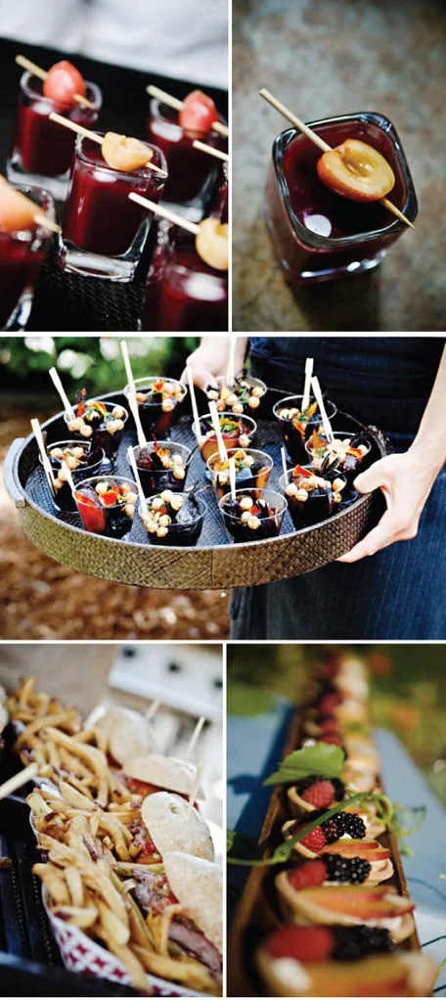

Recent reviews
Friends don’t let friends throw bad parties… thank you for your referrals and all the good words.
WeddingWire ratings, out of 5.0
Richard works out of Floyd, but also caters in other places, so he did our wedding in Charleston. We are vegan, and were looking for a chef that could not only do vegan, but could cook everything. We wanted everything to be as locally sourced as possible, to be from small suppliers, and to be ecofriendly. Richard did everything we wanted and more, having 7 varieties of locally caught fish, cheeses from small local farms, using eggs from his own chicken and greens from his own gardens. He was great with figuring out the menu and the pricing was so reasonable for how specific we were being with what we wanted. He’s also very proud of his food, and it comes across as he explains dishes to those who are getting food. And there was so much food, that when it was announced that dinner was served, people were shocked since they thought they had already eaten dinner. The vegetarian food was great, I heard over and over how perfectly every piece of fish was cooked, and my little nephew even asked if he could take some meat home with him. He even sent home biodegradable take home containers for the guests (at our request) so no food was wasted. It was just perfect.
Dear Richard, Thank you so, so very much for taking care of this. I don’t know what to say only that this is so kind of you. It is so wonderful to know people out there like yourself, that are so passionate about what they do and to go above and beyond the ordinary to do something so nice without a hesitation or even know this person. The food sounds quite wonderful and you have made me very, very hungry.
We just wanted you to know how much we enjoyed your wonderful food last Saturday. Everyone commented on how delicious every appetizer, entree, and side dish was! Several of our friends and the minister are Auburn fans so that was icing on the cake for them when they heard you shared that passion. Your love and care in growing and preparing the dishes was very evident and appreciated.
Thank you so very much! It wouldn’t have been quite as wonderful had you not been there to help execute a delicious dinner and exceptional service! We appreciate all your quick responses to our questions and working so easily with our wedding coordinator. We owe you a million thanks! We absolutely loved our wedding day :)
Fantastic! Amazing! Wow! I found Richard on the internet and had been working with him for our wedding, and then our wedding had to be postponed. My fiancé then surprised me with a catered birthday dinner by Richard and I couldn’t have been more happy with the result. His professionalism, unique recipes and presentation were stunning! So, I was able to experience the best pre-wedding tasting! I cannot wait to see and taste all the wonderful menu items for our rehearsal dinner and wedding to come! Thank you Richard!
Richard Perry is an exceptional individual and chef. I hosted an event with 50 Presidents and CEOs of the top technology companies in the region. The food was FANTASTIC, the service exemplary and Richard was the belle of the ball. I highly recommend Richard and Classic Catering for your next event, large or small!

Your event could be next
From the initial contact, to the tasting, to the day of the event itself, Richard will personally supervise all of the details.
Plan your event